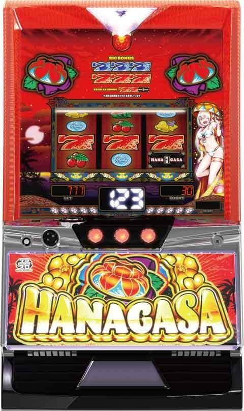
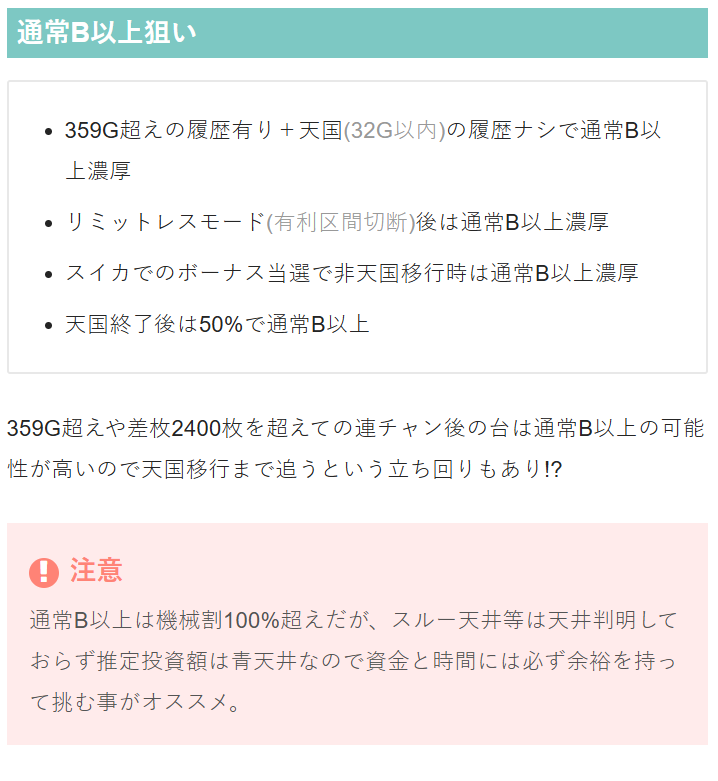
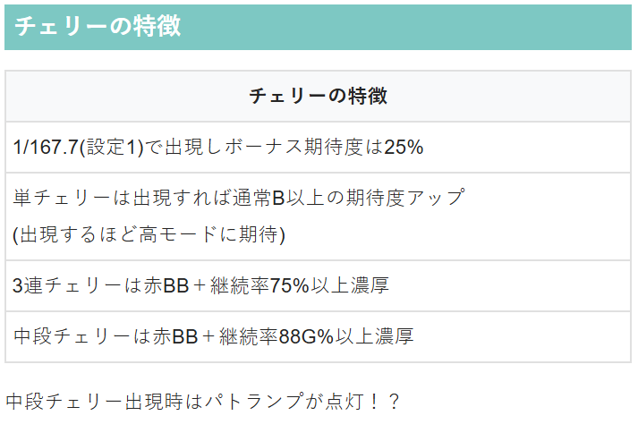
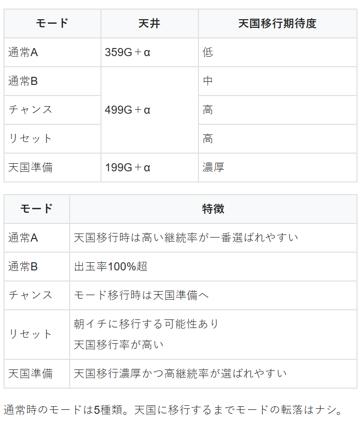
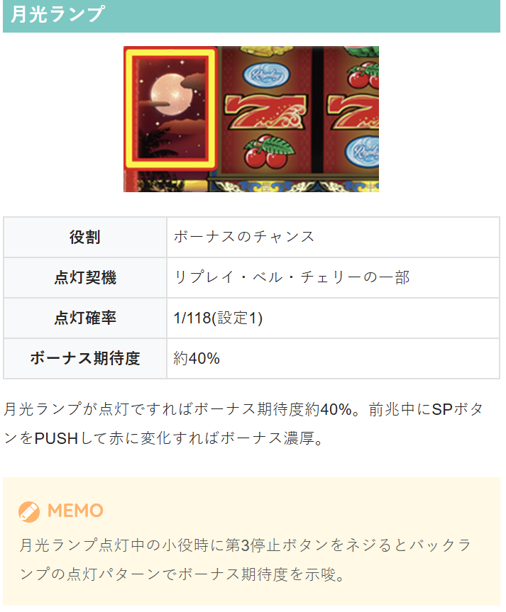

花笠


※設置台数が少ないため、暫く狙い目が暫定の可能性あり
※ボーナス中の打ち方。予告音も押し順ナビも無い場合は必ず右→中→左の逆押しフリー打ちで消化。
狙い目
【リセット狙い】
40Gから
【ゲーム数天井狙い】
290Gから
【リミットレスモード後（有利切れ後狙い）】
0Gから202Gくらいまで。
天国準備が強いため199G+α（202Gくらい）までは回した方が良い。
もしチバリヨ2シリーズ同様なら天国まで？相当サンプル集まるまでわからなそう。
チバリヨ2同様15連以上はリミットレスモード移行と思われる。
差枚が2400枚超えていれば有利切れ後扱いで良さそう？
【天国準備狙い】
天国準備の天井は199G+α
天国0スルー 70Gから202Gくらいまで。（天国後は20％で天国準備へ）
※天国は3連以上を天国扱いとする。
※0スルー消化時にモードB以上確認した場合はボーナス当選まで。
【通常B以上狙い】
380G越え、単チェ等モードB以上確認台 140Gから
モードB以上確認後3スルー以上 0Gから天国まで？
※リミットレスモード後はB以上のため同様に3スルーから天国まで？
【ゾーン狙い】
不明
300Gハマリ以降は359G+αに通常Aの天井あるが、抜けたら通常B以上確定するためそのままボーナス当選まで。
【有利区間関連狙い】
不明。サンプル集まる前に撤去される可能性高いかも。
やめ時
ボーナス終了後32G消化してやめ
その他




参考元
ツラヌキメソッド（無料期待値表）
かめとうさぎのパチスロブログ
基本情報
- メーカー: ネット
- 機械割: 97.3% 〜 114.9%
- 導入開始日: 2025年05月19日（月）
- ゲーム性概要: ・花笠ランプが光ればボーナス当選 ・ボーナス中は押し順ナビなし時は逆押しで最大枚数を獲得!? ・約1時間に1回は天国への移行に期待 ・チバリヨでもおなじみの「リミットレスループ」も健在 ・新たなトリガー「クラッシュフリーズ」発生で虹パト＆ボーナス5個以上をストック


打ち方
打ち方・小役
打ち方（小役狙い）
「最初に狙う絵柄」 左リールは取りこぼしがないのでフリー打ちでOK。上段にスイカが止まった場合のみ、中リールにもスイカを狙おう。

「スイカ停止時」 中リールはいずれかのボーナス絵柄を目安にスイカを狙う。

「レア役の停止形（一例）」 チェリーはすべて擬似遊技。スイカは3枚の払い出しがある。

変則押しはNG
通常時は左リール第1停止での消化を推奨する。
ボーナス中の打ち方
「基本は押し順ナビ通りに消化」

「押し順ナビなし時は逆押し」 押し順ナビ非発生の場合、逆押しベルorスイカorリプレイが成立している。逆押しベルは順押しすると取りこぼす（0枚）ので、逆押しをして3枚or5枚を取ることでボーナスの獲得枚数がアップかつ、逆押しベルやスイカの連続で1G連を抽選する。 右リール上段にスイカが止まった場合は中リールにスイカを狙おう。


解析情報通常時
小役関連
小役のボーナス期待度
| 役 | 期待度 |
|---|---|
| リプレイ | 低 |
| スイカ | ↓ |
| ベル揃い | ↓ |
| チェリー | 高 |
契機別のボーナス当選割合
| 契機 | 期待度 |
|---|---|
| リプレイ・ベル | 約35% |
| チェリー | 約26% |
| スイカ | 約5% |
| ハズレ | 約4% |
| ゲーム数消化 | 約30% |
チェリーの実質確率
| 設定 | 確率 |
|---|---|
| 1 | 1/167.7 |
チェリーのボーナス期待度
| 役 | 期待度 |
|---|---|
| チェリー | 約25% |
| 3連チェリー | 100% |
| 中段チェリー | 100% |
チェリーごとの特徴
| 種類 | 特徴 |
|---|---|
| 単チェリー | ● 通常B以上で出現しやすい ● 出現回数が多いほど上位モードに期待できる |
| 確定チェリー | ● 赤7BIG濃厚 ● 天国モードの75%継続以上濃厚 |
| 中段チェリー | ● 赤7BIG濃厚 ● パトモード濃厚（赤or虹） |
チェリー出現時のトータルボーナス期待度は約25%。 3連チェリー停止でボーナスの期待大、中段チェリーはBIG＋パトランプ点灯（赤パト以上）＋ボーナスストック濃厚となる。
小役確率（設定1）
| 役 | 確率 |
|---|---|
| 押し順ベル（10枚） | 1/2.3 |
| リプレイ | 1/7.3 |
| 共通ベル(5枚) | 1/19.5 |
| スイカ | 1/80.0 |
| ボーナス中逆押しベル | 1/2.5 |
モード
通常モードごとの特徴
| モード | 特徴 |
|---|---|
| 通常A | ● 天国以上移行期待度：低 ● 天井： 359G+α ● 天国移行時は最も高継続率が選ばれやすい |
| 通常B | ● 天国以上移行期待度：中 ● 天井： 499G+α ● 滞在中の機械割は100%オーバー |
| チャンス | ● 天国以上移行期待度：高 ● 天井： 499G+α ● 天国準備移行の可能性あり |
| リセット | ● 天国以上移行期待度：高 ● 天井： 499G+α ● 設定変更後に移行しやすいモード |
| 天国準備 | ● 次回天国以上濃厚 ● 天井： 199G+α ● 天国移行時は高継続率が選ばれやすい |
モードは天国以上へ移行するまで転落なし。設定変更後はモード不問で最大天井が199G＋αに短縮。リセットはボーナス当選時に天国へ移行しなかった場合、再度移行する場合がある。スイカでのボーナス当選後（非天国以上）の場合は、必ず通常B以上へ移行するところもポイントだ。
天国・パトモード終了時のモード振り分け
| 移行モード | 振り分け |
|---|---|
| 通常B以上 | 約50% |
| 天国準備 | 約20% |
天国以上終了時（連チャン後）は約20%で天国準備へ行くので、狙い打つことも可能。 リミットレスモード終了後は必ず通常B以上へ移行する。
フリーズ
ロングフリーズ
おもに中段チェリー停止時に発生。BIG＋赤パト（継続率88%）以上濃厚だ。

クラッシュフリーズ
BIG＋虹パト（継続率92%）濃厚＋ストック5個以上を獲得するプレミアム演出。 リミットレスモード中はクラッシュフリーズが発生しやすい。

クラッシュフリーズ動画
BIG＋虹パトモード（継続率約92%）濃厚＋ストック5個以上を獲得するフリーズ演出。リミットレスモードから虹パトモードへ昇格する際にも発生する。
解析情報ボーナス時
ボーナス
ボーナス概要
ボーナスは青7BIG、赤7BIG、REGの3種類。ベルナビ回数管理型で、BIGは青7と赤7共通で約217枚、REGは約108枚を獲得できる。 青7BIGと赤7BIGで獲得枚数に差はないが、青7BIG中に1G連に当選すると継続率88%（赤パトモード）以上へ昇格する。

ボーナス性能
| 項目 | BIG（青7・赤7共通） | REG |
|---|---|---|
| 継続ゲーム数 | ベルナビ30回 | ベルナビ15回 |
| 純増 | 約3.2枚/G | |
| 獲得枚数 | 約217枚 | 約108枚 |
| 青7BIGの特徴 | 1G連当選率は約22%、 1G連当選で継続率88%以上に昇格濃厚 | |
| その他 | 通常時のボーナス比率はBIG：REG＝1：1、 押し順ナビなし時は逆押し消化で獲得枚数アップ |
「押し順ナビなし時は逆押しで消化」 ボーナス中の押し順ナビ非発生時は、逆押しで消化することで3or5枚ベルを取得可能（スイカ、リプレイの可能性もあり）。 ベル・スイカが連続して成立するほど、1G連当選期待度がアップする。

「1G連抽選」 1G連の当選契機はおもに逆押しでのベルorスイカの連続。リール右側のレンちゃんランプが点灯すれば1G連濃厚だ。

天国・パトモード
天国・パトモード概要
今作でもBIG入賞時にパトランプが光ればパトモード濃厚。赤点灯なら赤パトモード以上、虹点灯なら虹パトモード濃厚となる。

天国モード以上移行の実質確率
| 設定 | 確率 |
|---|---|
| 1 | 約1/676 |
天国・パトモードの継続率
| モード | 継続率 |
|---|---|
| 天国 | 66%or75%or80% |
| 赤パト | 88% |
| 虹パト | 92% |
天国モード以上は32G以内のボーナス当選濃厚。最大ボーナス15連で、虹パトモード突入濃厚だ。
ループ中の青7BIG選択率
| ループ回数 | 選択率 |
|---|---|
| 5回目 | 33.59% |
| 10回目 | 90.63% |
3・7・9回目は青7BIGのチャンス、5・10回目は青7BIG当選の大チャンスだ。
リミットレスモード
リミットレスモード概要
虹パトモード終了後もしくは有利区間完走後に突入するモードで、ループに漏れるまで32G以内にボーナスが連チャン。ボーナス当選ごとに有利区間を切るため、上限なしで枚数を獲得できる。 また、継続ごとに虹パトモード（継続率約92%）への昇格を抽選していて、当選した場合はクラッシュフリーズが発生して 虹パトモード移行＋ストック5個以上濃厚 。もちろん昇格した虹パトモード終了後は再びリミットレスモードへ突入する。
リミットレスモード性能
| 項目 | 内容 |
|---|---|
| 突入契機 | 虹パトモード終了後or有利区間リセット時 |
| 消化中の特徴 | 32G以内のボーナス濃厚かつ 虹パトモードへの昇格を抽選 |
| その他 | ボーナス終了ごとに有利区間をリセット、 終了後は必ず通常B以上へ移行 |
演出情報
通常時
月光ランプ
リプレイ・ベル・チェリー時にリール左の月光ランプが光ればボーナス当選のチャンス。最終的に花笠ランプが光ればボーナス当選となる。

月光ランプ点灯確率
| 設定 | 確率 |
|---|---|
| 1 | 約1/118 |
月光ランプ点灯時の期待度アップパターン
| 契機 | パターン |
|---|---|
| SPボタンPUSH | ● 変化しなくても（黄色のままでも）期待度約40% ● 月光ランプが赤くなればボーナス濃厚 |
| 小役入賞時 | ● 第3停止ボタンを長押しした時のリールバックランプフラッシュに注目 ● 赤フラッシュならボーナス!? |
［月光ランプ赤］

SPボタンを押して、月光ランプが赤くなればボーナス（PUSHは1回のみ有効）！
［リール赤フラッシュ］

演出法則
| 演出 | 示唆 |
|---|---|
| 予告音 | スイカ・チェリーに対応 |
| 遅れ | チェリーに対応 |
| レバーON時に停止音が鳴る | ボーナス濃厚 |
| 停止音遅れ | ボーナス濃厚 |
| 停止音が鳴らない | ボーナス濃厚 |
| 瞬き点滅（花笠） | ボーナス濃厚 |
| ロングウエイト | BIG濃厚 |
| 大遅れ | BIG濃厚 |
| 無音 | BIG濃厚 |
| チバリヨスタート音 | BIG濃厚 |
| 停止音がチバリヨ | BIG濃厚 |
小役入賞時のバックライトフラッシュの示唆
| 成立役 | フラッシュ | 示唆 |
|---|---|---|
| ベルorリプレイ | 弱 | デフォルト |
| ベルorリプレイ | 中 | ボーナス期待度［中］ |
| ベルorリプレイ | 強 | ボーナス期待度［高］ |
| スイカ | 弱 | デフォルト |
| スイカ | 強 | ボーナス濃厚 |
| 小役入賞 （種類不問） | なし | ボーナス濃厚 |
| 小役入賞 （種類不問） | 赤発光 | ボーナス濃厚 |
フラッシュのパターンは弱が右→左へ、中は右→左→右、強が右→左→右→上下に発光する3段階のステップアップ形式になっている。
ボイス系の示唆はコチラ
花笠ランプ/トップランプ
ボーナス告知時や終了時の示唆
［花笠ランプ］

ボーナス告知時のボーナス種別＆モード示唆
| 花笠の点滅パターン | 示唆 |
|---|---|
| 通常点滅 | ボーナス濃厚 |
| 高速点滅 | BIG濃厚 |
| 徐々に高速点滅 | BIG濃厚 |
| 777セグ | 青7BIG濃厚 |
| スロー点滅 | BIG濃厚＋通常B以上 |
| 同時点滅 | BIG濃厚＋通常B以上 |
| 点灯 | BIG濃厚＋通常B以上 |
| 咲き点滅 | BIG濃厚＋チャンス以上 |
| 渦巻点滅 | BIG濃厚＋チャンス以上 |
| 流星点滅 | BIG濃厚＋チャンス以上 |
| 鼓動点滅 | BIG濃厚＋チャンス以上 |
| 高速鼓動点滅 | BIG濃厚＋チャンス以上 |
| 花笠だけ点滅 | BIG濃厚＋天国準備 |
| 左花笠のみ点滅 | BIG濃厚＋天国準備 |
| 右花笠のみ点滅 | BIG濃厚＋天国準備 |
| 葉っぱだけ点滅 | BIG濃厚＋天国準備 |
| 逆渦巻点滅 | BIG濃厚＋天国準備 |
| 花笠と葉っぱ交互点滅 | BIG濃厚＋天国準備 |
| 下パネル消灯＋通常点滅 | BIG濃厚＋継続濃厚 |
| HANAセグ | BIG濃厚＋継続濃厚 |
| どすこい点滅 | BIG濃厚＋継続濃厚 |
| 虹色点滅 | 青7BIG＋継続濃厚 |
※スロー点滅～花笠と葉っぱ交互点滅はボーナス後32G以内に発生で継続濃厚
［トップランプ］

ボーナス終了後のトップランプ色別示唆
| 色 | 示唆 |
|---|---|
| 白のみ | デフォルト |
| 黄色に点滅 | 通常B以上示唆［弱］ |
| 緑色に点滅 | 通常B以上示唆［強］ |
| 赤色に点滅 | 通常B以上＋継続期待度アップ |
| 青色に点滅 | 継続濃厚 |
| 虹色に点滅 | 継続濃厚＋80%継続以上 |
※設定変更1回目は示唆系の出現率が大幅にアップ
武田鉄矢＆レンちゃんボイス
ボイスの示唆傾向
| パターン | パターン |
|---|---|
| 違和感ボイス | ● レバーON時～第3停止時の各トリガーで発生 ● BIG＋80%継続の天国orパトモード濃厚 例）思えばパチスロまで来たもんだ |
| 青7ボーナス中 予告音 | ● 発生時は1G連＋パトモード濃厚 例）君たちは腐ったスイカじゃない |
| 青7昇格演出 | ● 花笠点滅とともに発生 ● REGや赤7BIGが青7BIGに昇格 |
| ボーナス入賞時 ボイス | ● 花笠点滅時orボーナステンパイ時に発生 ● BIG＋次回継続＋80%継続の天国orパトモード濃厚 ● 高設定ほど発生しやすい 例）こーの、バカちんが!! |
［レンちゃん］ボイスごとの示唆詳細
| ボイス | 示唆 |
|---|---|
| ここはどこ？も、もしかして！ | 通常時はBIG＋天国以上、 ボーナス後32G以内は BIG＋次回継続or3連チェリー |
| やりますね～ | 通常時はBIG＋天国以上、 ボーナス後32G以内は BIG＋次回継続or3連チェリー |
| あ、お見事だね、これ！ | 通常時はBIG＋天国以上、 ボーナス後32G以内は BIG＋次回継続or3連チェリー |
| ざわざわ… | 通常時はBIG＋天国以上、 ボーナス後32G以内は BIG＋次回継続or3連チェリー |
| チャンスだよっ！ | 通常時はBIG＋天国以上、 ボーナス後32G以内は BIG＋次回継続or3連チェリー |
| ん？あやしいぞ～ | 通常時はBIG＋天国以上、 ボーナス後32G以内は BIG＋次回継続or3連チェリー |
| なんかヘブン！！ | 通常時はBIG＋天国以上、 ボーナス後32G以内は BIG＋次回継続or3連チェリー |
| あっ、あつ～いっ！！ | BIG＋天国以上＋継続率80%以上 ※通常時のみ発生 |
| 激熱だよっ！！ | BIG＋天国以上＋継続率80%以上 ※通常時のみ発生 |
| ラッキー | 1G連濃厚 ※ボーナス中のみ発生 |
| チャンスだよっ！ | 1G連濃厚 ※ボーナス中のみ発生 |
| 一緒に押そうよ→おりゃ！→ うりゃ→どーん！にゃははは～ | 1G連濃厚 ※青7BIG中のみ発生 |
| やったね～！ | BIG＋次回天国以上濃厚 ※ボーナス告知ゲームで発生 |
| すんごいよ～！ | BIG＋次回天国以上濃厚 ※ボーナス告知ゲームで発生 |
| あ、お見事だね、これ！ | BIG＋次回天国以上濃厚 ※ボーナス告知ゲームで発生 |
| おめでとうございます！ | BIG＋次回天国以上濃厚 ※ボーナス告知ゲームで発生 |
| さっすがですっ | BIG＋次回天国以上濃厚 ※ボーナス告知ゲームで発生 |
| やりますね～ | BIG＋次回天国以上濃厚 ※ボーナス告知ゲームで発生 |
| よっしゃああああ！あ。 | BIG＋次回天国以上濃厚 ※ボーナス告知ゲームで発生 |
| にゃはははっ | BIG＋次回天国以上濃厚 ※ボーナステンパイ時に発生 |
| テンパイだよっ！ | BIG＋次回天国以上濃厚 ※ボーナステンパイ時に発生 |
| はながさ～ | BIG＋次回天国以上濃厚 ※ボーナステンパイ時に発生 |
| 花笠点いてんのに、 日和ってるやついる？いねーよな？ | BIG＋次回継続＋天国以上 ＋継続率75%以上 ＋設定示唆(弱) ※ボーナス告知ゲームの レンちゃんのモノマネボイス |
| あなた花笠って言うのね！ ウオーー | BIG＋次回継続＋天国以上 ＋継続率75%以上 ＋設定示唆(弱) ※ボーナス告知ゲームの レンちゃんのモノマネボイス |
| 二度もぶった、 花笠点いたことないのに！ | BIG＋次回継続＋天国以上 ＋継続率75%以上 ＋設定示唆(弱) ※ボーナス告知ゲームの レンちゃんのモノマネボイス |
| 駆逐してやる！！ この世の花笠…一匹…残らず！！ | BIG＋次回継続＋天国以上 ＋継続率75%以上 ＋設定示唆(弱) ※ボーナス告知ゲームの レンちゃんのモノマネボイス |
| レンちゃん一日一回ボイス | BIG＋次回継続＋天国以上 ＋継続率80%以上＋設定示唆(弱) ※ボーナス告知ゲームで発生 |
※一緒に押そうよはレバーON時から第3停止時の各トリガーで順に発生
［武田鉄矢］ボイスごとの示唆詳細
| ボイス | 示唆 |
|---|---|
| 僕は死にませんっ！ がしかしここは天国かもしれませんっ！ | BIG＋天国以上＋ 継続率80%以上 ※通常時のみ発生 |
| 思えばパチスロまできたもんだ！ | BIG＋天国以上＋ 継続率80%以上 ※通常時のみ発生 |
| 人という字はね、 お互いに支えあっています！ | BIG＋天国以上＋ 継続率80%以上 ※通常時のみ発生 |
| おめでとう！ これがあなたに贈る言葉です！ | BIG＋天国以上＋ 継続率80%以上 ※通常時のみ発生 |
| あ、はい前兆ではないでしょうか | BIG＋天国以上＋ 継続率80%以上 ※通常時のみ発生 |
| はいっ、じゃあリールを止めてください！ | BIG＋天国以上＋ 継続率80%以上 ※通常時のみ発生 |
| チャンスだよ！ | BIG＋天国以上＋ 継続率80%以上 ※通常時のみ発生 |
| 激アツじゃないか！ | BIG＋天国以上＋ 継続率80%以上 ※通常時のみ発生 |
| やったな～おいっ！ | BIG＋天国以上＋ 継続率80%以上 ※通常時のみ発生 |
| 君たちは腐ったチェリーじゃない！ | BIG＋天国以上＋ 継続率80%以上 ※通常時のみ発生 |
| 君たちは腐ったスイカじゃない！ | BIG＋天国以上＋ 継続率80%以上 ※通常時のみ発生 |
| キュイーン！ | 1G連濃厚 ※青7BIG中のみ発生 |
| おい、チャンスだよ！ | 1G連濃厚 ※青7BIG中のみ発生 |
| 君たちは腐ったスイカじゃない | 1G連濃厚 ※青7BIG中のみ発生 |
| 武田鉄矢です！ | BIG＋次回継続＋天国以上 ＋継続率80%以上 ＋設定示唆(中) ※ボーナステンパイ時に発生 |
| おめでとうございます | BIG＋次回継続＋天国以上 ＋継続率80%以上 ＋設定示唆(中) ※ボーナステンパイ時に発生 |
| こーの、バカちんが！！ | BIG＋次回継続＋天国以上 ＋継続率80%以上 ＋設定示唆(中) ※ボーナステンパイ時に発生 |
| 武田鉄矢一日一回ボイス | BIG＋次回継続＋天国以上 ＋継続率80%以上 ＋設定示唆(強) ※ボーナス告知ゲームで発生 |
示唆ではないが、青7BIGへの昇格時も武田鉄矢ボイスが発生する。
［レンちゃん＋武田鉄矢］ボイスごとの示唆詳細
| ボイス | 示唆 |
|---|---|
| レバー「あれっ？武田鉄矢さん？」 第1停止「えー、あ、はいっ」 第2停止「武田～」 第3停止「あ、鉄矢です！はいっ！」 | BIG＋次回継続＋天国以上 ＋継続率80%以上 ＋設定示唆(中) ※ボーナス告知ゲームで発生 |
| レンちゃん「なんですか～全くお前は～」 武田鉄矢「こらっ偽物め、私が武田鉄矢だっ！この！」 | BIG＋次回継続＋天国以上 ＋継続率80%以上 ＋設定示唆(中) ※ボーナス告知ゲームで発生 |
| レバー「はい、注目」 第1停止「はいボーナス」 第2停止「ボーナスですっ!」 第3停止「ボーナスだって言ってんだろうがこのバカちんが!!」 | BIG＋次回継続＋天国以上 ＋継続率80%以上 ＋設定示唆(中) ※ボーナス告知ゲームで発生 |
| レバー「ちょっと待ってね～」 第1停止 「止めて」 第2停止「止めて！」 第3停止「リールを止めろって言ってんだろうがこのバカちんが！！」 | BIG＋次回継続＋天国以上 ＋継続率80%以上 ＋設定示唆(中) ※ボーナス告知ゲームで発生 |
レンちゃんと武田鉄矢の掛け合いはすべてBIG+次回継続+継続率80%以上の天国orパトモード濃厚。高設定ほど発生しやすい。
ボーナス
演出法則
| 演出 | 示唆 |
|---|---|
| 停止音変化 | スイカ停止時または、 逆押しベルorスイカ3連以上時の逆押しベル時に発生 ※上記以外の逆押しベルで発生＝1G連濃厚 |
| 停止時に 確定音発生 | 1G連濃厚 |
ボイス系の示唆はコチラ
ボーナス停止パターン別の示唆（告知発生時）
| パターン | 示唆 |
|---|---|
| 左1stで中段に赤7停止 | デフォルト |
| 左1stで下段に赤7停止 | 赤7BIG濃厚 |
| 左1stなのに右リール中段に赤7停止 | 赤7BIG＋天国濃厚 |
| 入賞時に赤バックランプフラッシュ発生 | 天国濃厚 |
| REGor赤7揃い後に昇格演出発生 | 青7BIG濃厚 |
［赤フラッシュ］

［青7BIGへの昇格］ 今回の昇格演出では、武田鉄矢ボイスの昇格演出を経て青7に昇格する。
その他
特殊条件下のボーナス中楽曲
| 発生条件 | 楽曲 |
|---|---|
| 赤7BIG or REG中の1G連当選 | 怪力ワンツーパンチ |
| 青7BIG中の1G連当選 | 完全無欠パワー |